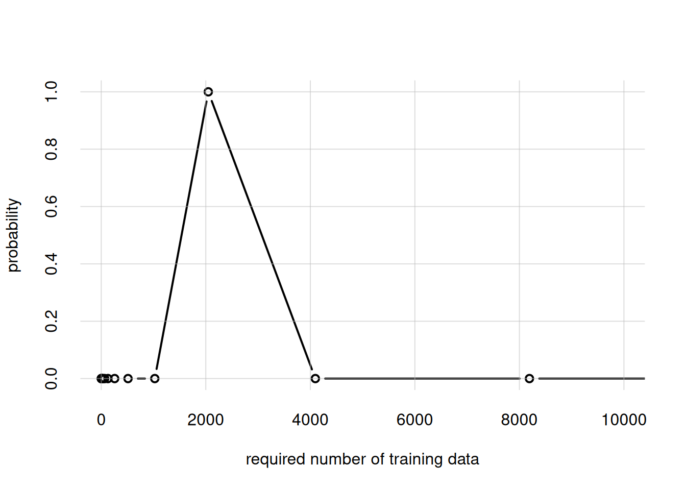
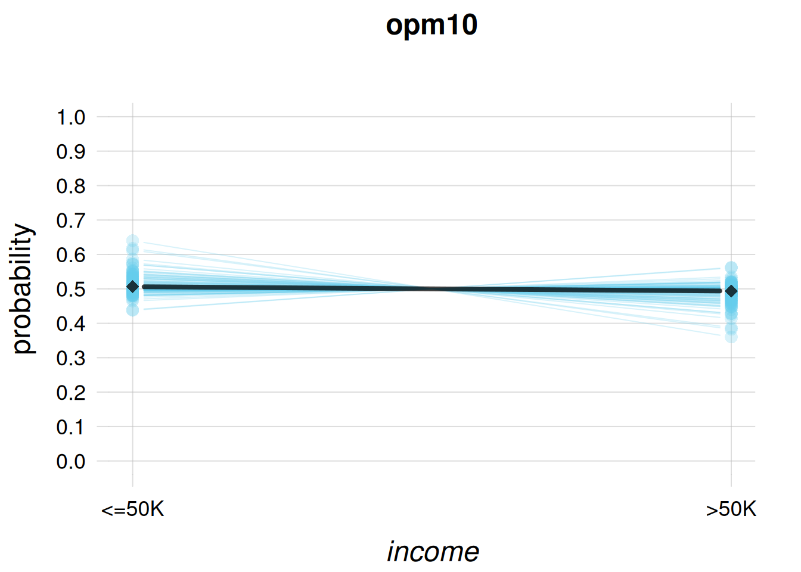
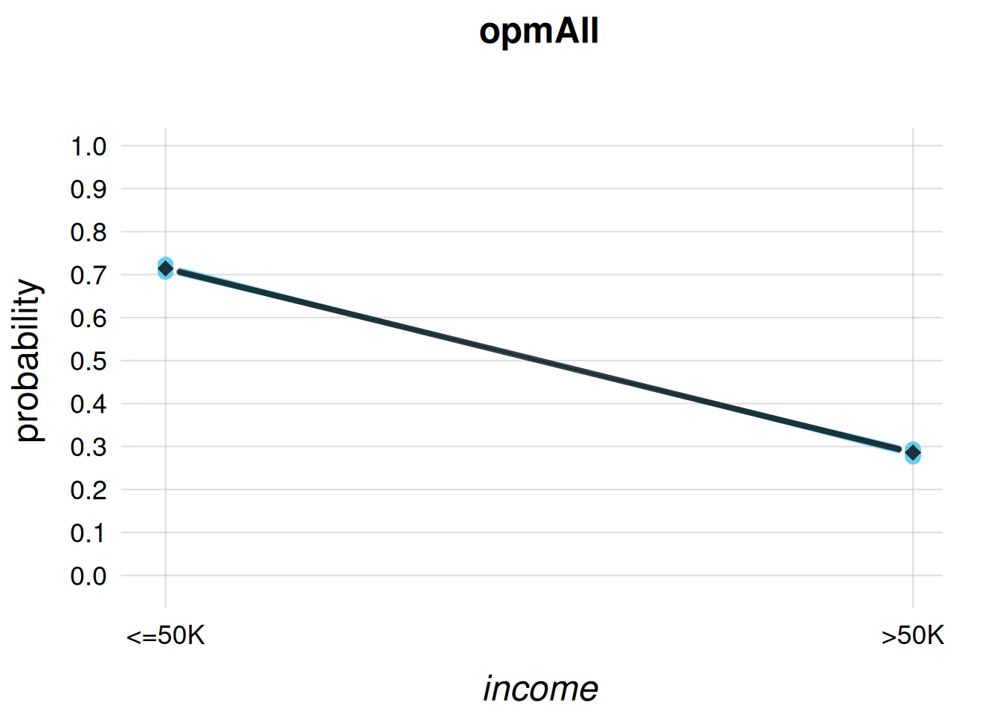
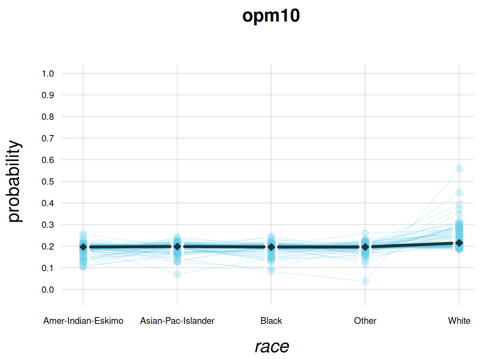
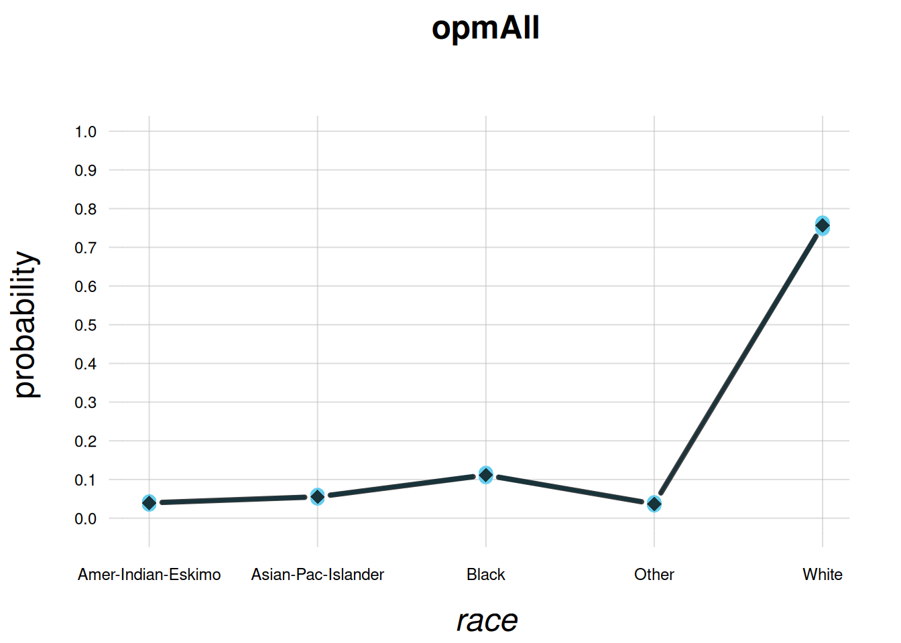
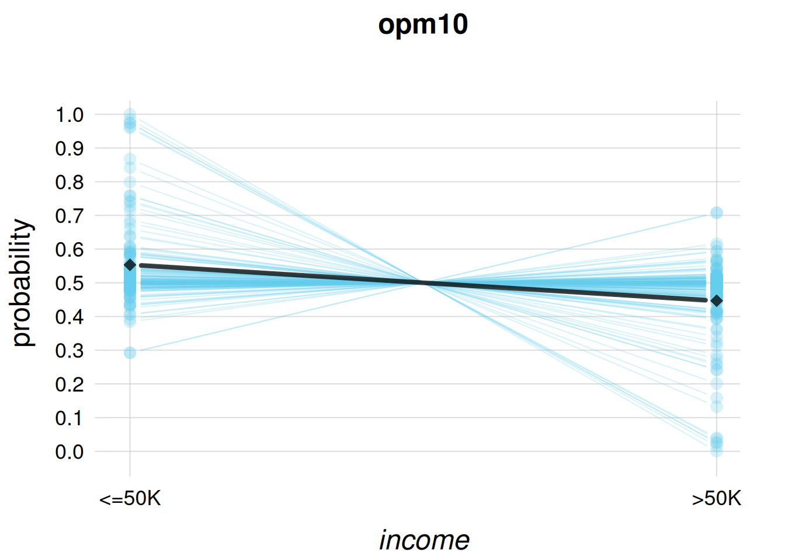
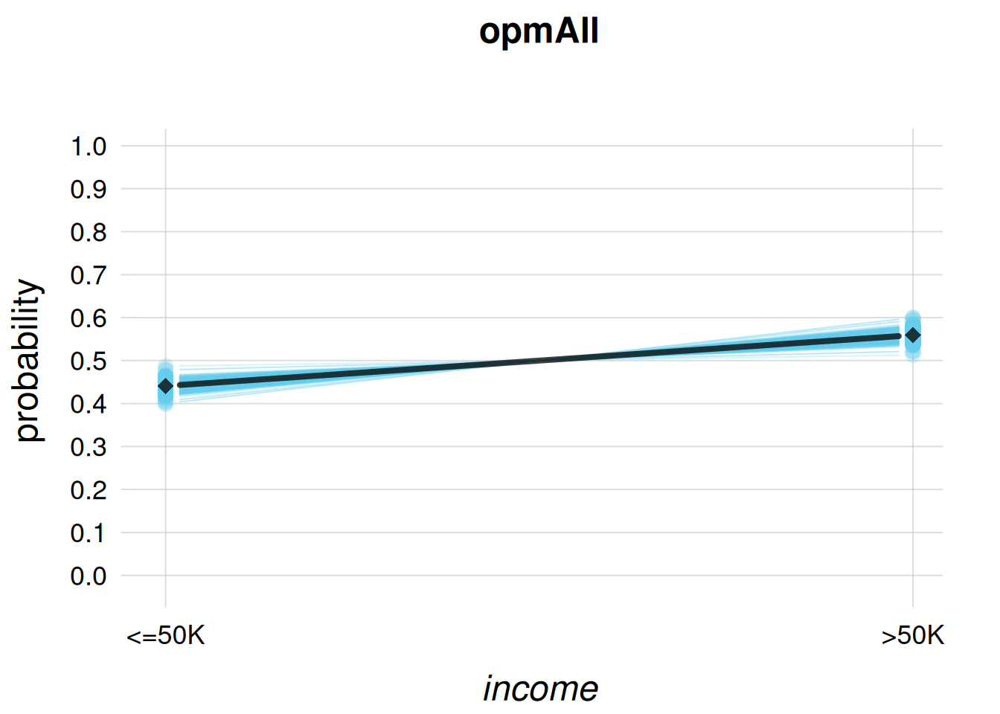
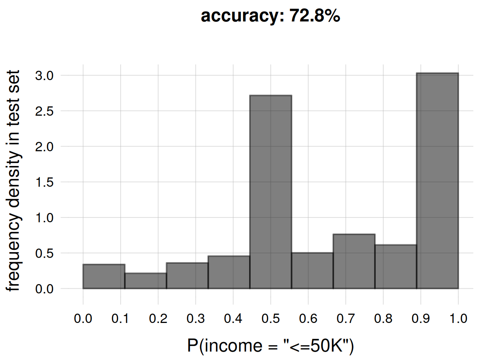

library('extraDistr')
library('foreach')
source('tplotfunctions.R')
source('guessmetadata.R')
source('buildagent.R')
source('infer.R')
source('decide.R')
source('mutualinfo.R')
source('rF.R')
source('plotFsamples1D.R')
options(repr.plot.width = 6 * sqrt(2), repr.plot.height = 6)35 Example application: adult-income task
Let’s illustrate the example workflow described in § 34.2 with a toy, but not too simplistic, example, based on the adult-income dataset.
All code functions and data files are in the directory
https://github.com/pglpm/ADA511/tree/master/code/OPM-nominal
We start loading the R libraries and functions needed at several stages. You need to have installed1 the packages extraDistr and foreach. Make sure you have saved all source files and data files in the same directory.
1 This is done with the install.packages() function.
35.1 Define the task
The main task is to infer whether a USA citizen earns less (≤) or more (>) than USD 50 000/year, given a set of characteristics of that citizen. In view of later workflow stages, let’s note a couple of known and unknown facts to delimit this task in a more precise manner:
Given the flexibility of the agent we shall use, we can generalize the task: to infer any subset of the set of characteristics, given any other subset. In other words, we can choose the predictand and predictor variates for any new citizen. Later on we shall also extend the task to making a concrete decision, based on utilities relevant to that citizen.
This flexibility is also convenient because no explanation is given as to what purpose the income should be guessed.
The training data come from a 1994 census, and our agent will use an exchangeable belief distribution about the population. The value of the USD and the economic situation of the country changes from year to year, as well as the informational relationships between economic and demographic factors. For this reason the agent should be used to draw inferences about at most one or two years around 1994. Beyond such time range the exchangeability assumption is too dubious and risky.
The USA population in 1994 was around 260 000 000, and we shall use around 11 000 training data. The population size can therefore be considered approximately infinite.
35.2 Collect & prepare background info
Variates and domains
The variates to be used must be of nominal type, because our agent’s background beliefs (represented by the Dirichlet-mixture distribution) are only appropriate for nominal variates. In this toy example we simply discard all original non-nominal variates. These included some, such as age, that would surely be relevant for this task. As a different approach, we could have coarsened each non-nominal variate into three or four range values, so that treating it as nominal would have been an acceptable approximation.
First, create a preliminary metadata file by running the function guessmetadata() on the training data train-income_data_example.csv:
guessmetadata(data = 'train-income_data_example.csv',
file = 'preliminary.csv')Inspect the resulting file preliminary.csv and check whether you can alter it to add additional background information.
As an example, note that domain of the \(\mathit{native\_country}\) variate does not include \({\small\verb;Norway;}\) or \({\small\verb;Sweden;}\). Yet it’s extremely likely that there were some native Norwegian or Swedish people in the USA in 1994; maybe too few to have been sampled into the training data. Let’s add these two values to the list of domain values, and increase the domain size of \(\mathit{native\_country}\) from 40 to 42. The resulting, updated metadata file has already been saved as meta_income_data_example.csv.
Agent’s parameters \(k_{\text{mi}}, k_{\text{ma}}\)
How many data should the agent learn in order to appreciably change its initial beliefs about the variates above, for the USA 1994 population? Let’s put an upper bound at around 1 000 000 (that’s roughly 0.5% of the whole population) with \(k_{\text{ma}}= 20\), and a lower bound at 1 with \(k_{\text{mi}}= 0\); these are the default values. We shall see later what the agent suggests might be a reasonable amount of training data.
35.3 Collect & prepare training data
The 11 306 training data have been prepared by including only nominal variates, and discarding datapoints with partially missing data (although the function buildagent() discards such incomplete datapoints automatically). The resulting file is test-income_data_example.csv.
35.4 Prepare OPM agent
For the sake of this example we shall prepare two agents with the same background information:
opm10, trained with 10 training datapointsopmall, trained with all 11 306 training datapoints
Prepare and train each with the buildagent() function:
## temporarily load all training data
traindata <- read.csv('train-income_data_example.csv', header = TRUE,
na.strings = '', stringsAsFactors = FALSE, tryLogical = FALSE)
## feed first 10 datapoints to an agent
opm10 <- buildagent(metadata = 'meta_income_data_example.csv',
data = traindata[1:10, ])
## delete training data for memory efficiency
rm(traindata)
opmall <- buildagent(metadata = 'meta_income_data_example.csv',
data = 'train-income_data_example.csv')
We can peek into the internal structure of these “agent objects” with str()
str(opmall)List of 4
$ counts : num [1:7, 1:16, 1:7, 1:14, 1:6, 1:5, 1:2, 1:42, 1:2] 0 0 0 0 0 0 0 0 0 0 ...
..- attr(*, "dimnames")=List of 9
.. ..$ workclass : chr [1:7] "Federal-gov" "Local-gov" "Private" "Self-emp-inc" ...
.. ..$ education : chr [1:16] "10th" "11th" "12th" "1st-4th" ...
.. ..$ marital_status: chr [1:7] "Divorced" "Married-AF-spouse" "Married-civ-spouse" "Married-spouse-absent" ...
.. ..$ occupation : chr [1:14] "Adm-clerical" "Armed-Forces" "Craft-repair" "Exec-managerial" ...
.. ..$ relationship : chr [1:6] "Husband" "Not-in-family" "Other-relative" "Own-child" ...
.. ..$ race : chr [1:5] "Amer-Indian-Eskimo" "Asian-Pac-Islander" "Black" "Other" ...
.. ..$ sex : chr [1:2] "Female" "Male"
.. ..$ native_country: chr [1:42] "Cambodia" "Canada" "China" "Columbia" ...
.. ..$ income : chr [1:2] "<=50K" ">50K"
$ alphas : num [1:21] 1 2 4 8 16 32 64 128 256 512 ...
$ auxalphas: num [1:21] -160706 -157643 -154588 -151547 -148530 ...
$ palphas : num [1:21] 0 0 0 0 0 0 0 0 0 0 ...
- attr(*, "class")= chr [1:2] "agent" "list"this shows that each agent is encoded as a list of four objects:
- the array
counts, containing the counts \(\color[RGB]{34,136,51}\# z\) - the vector
alphas, containing the values of \(2^k\) - the vector
auxalphas, containing the (logarithm of) the multiplicative factors (§ 33.2) - the vector
palphas, containing the updated probabilities about the required amount of training data
The agent has internally guessed how many training data should be necessary to affect its prior beliefs. We can peek at its guess by plotting the alphas parameters against the palphas probabilities:
mytplot(x = opmall$alphas, y = opmall$palphas, type = 'b',
xlim = c(0, 10000), ylim = c(0, NA),
xlab = 'required number of training data', ylab = 'probability')
The most probable amount seems to be of the order of magnitude of 2000 units.
Note that you can see the complete list of variates and their domains by simply calling dimnames(opmall$counts) (or any relevant agent-object name instead of opmall). Here is the beginning of the list:
head(dimnames(opmall$counts))$workclass
[1] "Federal-gov" "Local-gov" "Private" "Self-emp-inc"
[5] "Self-emp-not-inc" "State-gov" "Without-pay"
$education
[1] "10th" "11th" "12th" "1st-4th" "5th-6th"
[6] "7th-8th" "9th" "Assoc-acdm" "Assoc-voc" "Bachelors"
[11] "Doctorate" "HS-grad" "Masters" "Preschool" "Prof-school"
[16] "Some-college"
$marital_status
[1] "Divorced" "Married-AF-spouse" "Married-civ-spouse"
[4] "Married-spouse-absent" "Never-married" "Separated"
[7] "Widowed"
$occupation
[1] "Adm-clerical" "Armed-Forces" "Craft-repair" "Exec-managerial"
[5] "Farming-fishing" "Handlers-cleaners" "Machine-op-inspct" "Other-service"
[9] "Priv-house-serv" "Prof-specialty" "Protective-serv" "Sales"
[13] "Tech-support" "Transport-moving"
$relationship
[1] "Husband" "Not-in-family" "Other-relative" "Own-child"
[5] "Unmarried" "Wife"
$race
[1] "Amer-Indian-Eskimo" "Asian-Pac-Islander" "Black" "Other"
[5] "White"
35.5 Application and exploration
Application: only predictands
Our two agents are ready to be applied to new instances.
Before applying them, let’s check some of their inferences, and see if we find anything unconvincing about them. If we find something unconvincing, it means that the background information we provided to the agent doesn’t match the one in our intuition. Then there are two or three possibilities: our intuition is misleading us and need correcting; or we need to go back to stage Collect & prepare background info and correct the background information given to the agent; or a combination of these two possibilities.
We ask the opm10 agent to forecast the \(\mathit{income}\) of the next unit, using the infer() function:
infer(agent = opm10, predictand = 'income')income
<=50K >50K
0.506288 0.493712 This agent gives a slightly larger probability to the \({\small\verb;<=50K;}\) case. Using the function plotFsamples1D() we can also inspect the opm10-agent’s belief about the frequency distribution of \(\mathit{income}\) for the full population. This belief is represented by a generalized scatter plot of 200 representative frequency distributions, represented as the light-blue lines:
plotFsamples1D(agent = opm10,
n = 200, # number of example frequency distributions
predictand = 'income',
ylim = c(0,1), # y-axis range
main = 'opm10') # plot title
where the black line is the probability distribution previously calculated with the infer() function.
This plot expresses the opm10-agent’s belief that future training data might lead to even higher probabilities for \({\small\verb;<=50K;}\). But note that the agent is not excluding the possibility of lower probabilities.
Let’s visualize the beliefs of the opmall-agent, trained with the full training dataset:
plotFsamples1D(agent = opmall, n = 200, predictand = 'income',
ylim = c(0,1), main = 'opmall')
The probability that the next unit has \(\mathit{income}\mathclose{}\mathord{\nonscript\mkern 0mu\textrm{\small=}\nonscript\mkern 0mu}\mathopen{}{\small\verb;<=50;}\) is now above 70%. Also note that the opmall-agent doesn’t believe that this probability would change appreciably if more training data were provided.
We can perform a similar exploration for any other variate. Let’s take the \(\mathit{race}\) variate for example:
plotFsamples1D(agent = opm10, n = 200, predictand = 'race',
ylim = c(0,1), main = 'opm10',
cex.axis = 0.75) # smaller axis-font size
Note again how the little-trained opm10-agent has practically uniform beliefs. But it’s also expressing the fact that future training data will probably increase the probability of \(\mathit{race}\mathclose{}\mathord{\nonscript\mkern 0mu\textrm{\small=}\nonscript\mkern 0mu}\mathopen{}{\small\verb;White;}\).
This is corroborated by the fully-trained agent:
plotFsamples1D(agent = opmall, n = 200, predictand = 'race',
ylim = c(0,1), main = 'opmall', cex.axis = 0.75)
These checks are satisfying, but it’s good to examine their agreement or disagreement with our intuition. Examine the last plot for example. The opmall agent has very firm beliefs (no spread in the light-blue lines) about the full-population distribution of \(\mathit{race}\). Do you think its beliefs are too firm, after 11 000 datapoints? would you like the agent to be more “open-minded”? In that case you should go back to the Collect & prepare background info stage, and for example modify the parameters \(k_{\text{mi}}, k_{\text{ma}}\), then re-check. Or you could even try an agent with a different initial belief distribution.
In making this kind of considerations it’s important to keep in mind what we learned and observed in previous chapters:

Application: specifying predictors
Let’s now draw inferences by specifying some predictors.
We ask the opm10 agent to forecast the \(\mathit{income}\) of a new unit, given that the unit is known to have \(\mathit{occupation}\mathclose{}\mathord{\nonscript\mkern 0mu\textrm{\small=}\nonscript\mkern 0mu}\mathopen{}{\small\verb;Exec-managerial;}\) and \(\mathit{sex}\mathclose{}\mathord{\nonscript\mkern 0mu\textrm{\small=}\nonscript\mkern 0mu}\mathopen{}{\small\verb;Male;}\) (two predictor variates). What would you expect?
The opm10-agent’s belief about the unit – as well as about the full subpopulation (§ 22.1) of units having those predictors – is shown in the following plot:
plotFsamples1D(agent = opm10, n = 200,
predictand = 'income',
predictor = list(occupation = 'Exec-managerial',
sex = 'Male'),
ylim = c(0,1), main = 'opm10')
Note how the opm10-agent still slightly higher probability to \(\mathit{income}\mathclose{}\mathord{\nonscript\mkern 0mu\textrm{\small=}\nonscript\mkern 0mu}\mathopen{}{\small\verb;<=50;}\), but at the same time it is quite uncertain about the subpopulation frequencies; more than if the predictor had not been specified. That is, according to this little-trained agent there could be large variety of possibilities within this specific subpopulation.
The opmall-agent’s beliefs are shown below:
plotFsamples1D(agent = opmall, n = 200,
predictand = 'income',
predictor = list(occupation = 'Exec-managerial',
sex = 'Male'),
ylim = c(0,1), main = 'opmall')
it believes with around 55% probability that such a unit would have higher, \({\small\verb;>50K;}\) income. The representative subpopulation-frequency distributions in light-blue indicate that this belief is unlikely to be changed by new training data.
Let’s now see an example of our agent’s versatility by switching predictands and predictors. We tell the opmall-agent that the new unit has \(\mathit{income}\mathclose{}\mathord{\nonscript\mkern 0mu\textrm{\small=}\nonscript\mkern 0mu}\mathopen{}{\small\verb;>50;}\), and ask it to infer the joint variate \((\mathit{occupation} \mathbin{\mkern-0.5mu,\mkern-0.5mu}\mathit{sex})\); let’s present the results in rounded percentages:
result <- infer(agent = opmall,
predictand = c('occupation', 'sex'),
predictor = list(income = '>50K'))
round(result * 100, 1) # round to one decimal sex
occupation Female Male
Adm-clerical 3.1 4.1
Armed-Forces 1.0 1.0
Craft-repair 1.1 9.4
Exec-managerial 3.6 16.0
Farming-fishing 1.0 2.1
Handlers-cleaners 1.0 1.6
Machine-op-inspct 1.1 3.1
Other-service 1.6 1.8
Priv-house-serv 1.0 1.0
Prof-specialty 4.8 14.7
Protective-serv 1.0 3.2
Sales 1.8 10.1
Tech-support 1.5 3.4
Transport-moving 1.1 3.7It returns a 14 × 2 table of joint probabilities. The most probable combinations are \(({\small\verb;Exec-managerial;}, {\small\verb;Male;})\) and \(({\small\verb;Prof-specialty;}, {\small\verb;Male;})\).
The rF() function
This function generates full-population frequency distributions (even for subpopulations) that are probable according to the data. It is used internally by plotFsamples1D(), which plots the generated frequency distributions as light-blue lines.
Let’s see, as an example, three samples of how the full-population frequency distribution for \(\mathit{sex} \mathbin{\mkern-0.5mu,\mkern-0.5mu}\mathit{income}\) (jointly) could be:
result <- rF(n = 3, # number of samples
agent = opmall,
predictand = c('sex', 'income'))
## name the samples
dimnames(result)[1] <- list(samples = paste0('#',1:3))
## permute & print so that samples are the last array dimension
print(aperm(result) * 100), , sample = #1
sex
income Female Male
<=50K 28.363 43.0849
>50K 6.578 21.9741
, , sample = #2
sex
income Female Male
<=50K 27.81697 43.4817
>50K 6.99239 21.7090
, , sample = #3
sex
income Female Male
<=50K 29.24027 42.3496
>50K 6.90106 21.5091These possible full-population frequency distributions can be used to assess how much the probabilities we find could change, if we collected a much, much larger amount of training data. Here is an example:
We generate 1000 frequency distributions for \((\mathit{occupation} \mathbin{\mkern-0.5mu,\mkern-0.5mu}\mathit{sex})\) given \(\mathit{income}\mathclose{}\mathord{\nonscript\mkern 0mu\textrm{\small=}\nonscript\mkern 0mu}\mathopen{}{\small\verb;>50K;}\), and then take the standard deviations of the samples as a rough measure of how much the probabilities we calculated a couple of cells above could change:
freqsamples <- rF(n = 1000,
agent = opmall,
predictand = c('occupation', 'sex'),
predictor = list(income = '>50K'))
variability <- apply(freqsamples,
c('occupation','sex'), # which dimensions to apply
sd) # function to apply to those dimensions
round(variability * 100, 2) # round to two decimals sex
occupation Female Male
Adm-clerical 0.28 0.33
Armed-Forces 0.16 0.16
Craft-repair 0.17 0.48
Exec-managerial 0.30 0.58
Farming-fishing 0.16 0.23
Handlers-cleaners 0.16 0.20
Machine-op-inspct 0.16 0.27
Other-service 0.21 0.21
Priv-house-serv 0.16 0.15
Prof-specialty 0.34 0.57
Protective-serv 0.16 0.29
Sales 0.22 0.48
Tech-support 0.20 0.29
Transport-moving 0.17 0.32the agent believes (at around 68%) that the current probability wouldn’t change more than about ±0.5%.
The inferences above were partially meant as checks, but we see that we can actually ask our agent a wide variety of questions about the full population, and do all sorts of association studies.
Exploring the population properties: mutual information
In § 18.5 we introduced mutual information as the information-theoretic measure of mutual relevance and association of two quantities or variates. For the present task, the opmall-agent can tell us the mutual information between any two sets of variates of our choice, with the function mutualinfo().
For instance, let’s calculate the mutual information between \(\mathit{occupation}\) and \(\mathit{marital\_status}\).
mutualinfo(agent = opmall,
A = 'occupation', B = 'marital_status')[1] 0.0827823It is a very low association: knowing either variate decreases the effective number of possible values of the other only \(2^{0.0827823\,\mathit{Sh}} \approx 1.06\) times.
Now let’s consider a scenario where, in order to save resources, we can use only one variate to infer the income. Which of the other variates should we prefer? We can calculate the mutual information between each of them, in turn, and \(\mathit{income}\):
## list of all variates
variates <- names(dimnames(opmall$counts))
## list of all variates except 'income'
predictors <- variates[variates != 'income']
## prepare vector to contain the mutual information
relevances <- numeric(length(predictors))
names(relevances) <- predictors
## calculate, for each variate, the mutual information 'relevance' (in shannons)
## between 'income' and that variate
for(var in predictors){
relevances[var] <- mutualinfo(agent = opmall, A = 'income', B = var)
}
## output the mutual informations in decreasing order
sort(relevances, decreasing = TRUE)marital_status relationship education occupation workclass
0.10074130 0.09046621 0.06332052 0.05506897 0.03002995
native_country sex race
0.01925227 0.01456655 0.00870089 If we had to choose only one variate to infer the outcome, on average it would be best to use \(\mathit{marital\_status}\). Our last choice should be \(\mathit{race}\).
35.6 Example application to new data
Let’s apply the opmall-agent to a test dataset with 33 914 new units. For each new unit, the agent:
- calculates the probability of \(\mathit{income}\mathclose{}\mathord{\nonscript\mkern 0mu\textrm{\small=}\nonscript\mkern 0mu}\mathopen{}{\small\verb;<=50;}\), via the function
infer(), using as predictors all variates except \(\mathit{income}\) - chooses one of the two values \(\set{{\small\verb;<=50K;}, {\small\verb;>50K;}}\), via the function
decide()trying to maximizing utilities corresponding to the accuracy metric
The function decide() will be described in more detail in chapters 3.3 and 38.
At the end we plot a histogram of the probabilities calculated for the new units, to check for instance for how many of the agent was sure (beliefs around 0% or 100%) or unsure (beliefs around 50%). We also report the final utility/accuracy per unit, and the time needed for the computation:
## Load test data
testdata <- read.csv('test-income_data_example.csv', header = TRUE,
na.strings = '', stringsAsFactors = FALSE, tryLogical = FALSE)
ntest <- nrow(testdata) # size of test dataset
## Let's time the calculation
stopwatch <- Sys.time()
testprobs <- numeric(ntest) # prepare vector of probabilities
testhits <- numeric(ntest) # prepare vector of hits
for(i in 1:ntest){
## calculate probabilities given all variates except 'income'
probs <- infer(agent = opmall,
predictor = testdata[i, colnames(testdata) != 'income'])
## store the probability for <=50K
testprobs[i] <- probs['<=50K']
## decide on one value
chosenvalue <- decide(probs = probs)$optimal
## check if decision == true_value, and store result
testhits[i] <- (chosenvalue == testdata[i, 'income'])
}
## Print total time required
print(Sys.time() - stopwatch)Time difference of 4.77739 secs## Histogram and average accuracy (rounded to one decimal)
myhist(testprobs, n = seq(0,1,length.out = 10), plot = TRUE,
xlab = 'P(income = "<=50K")',
ylab = 'frequency density in test set',
main = paste0('accuracy: ', round(100*mean(testhits), 1), '%'))